on hold
Vecteur Anti-Cheat
Detection and integrity tooling for supported game environments.
security

SSAR Groupssar-group.github.io
A running list of SSAR Group projects. What's shipping, what's paused, and what's still an open question.
sorted by submission order
Detection and integrity tooling for supported game environments.
ASL provides developers with a collection of utilities, libraries, and tools designed to simplify application development and accelerate common workflows.
Wallet management application and supporting tooling.
OPM is a cross-ecosystem CLI designed to simplify project creation, dependency management, and development workflows through reusable templates.
Early-stage utility project. See github project.
Standalone desktop IDE for the OpenScript ecosystem, built on Electron and Next.js.
Core language and ecosystem development, syntax, tooling, and specifications.
Documentation Expand the public docs for active projects and their developer workflows.
Infrastructure Improve shared tooling before widening project scope.
Roadmap Projects on hold or experimental will get proper scoping once priorities settle.